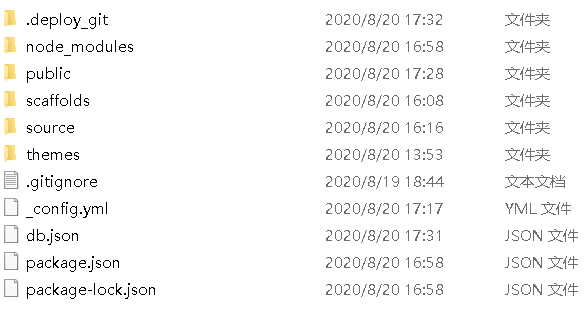
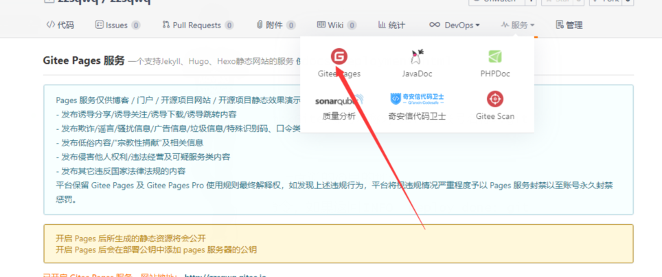

引言
最初有搭建博客的想法是因为朋友建议，加上我自己也确实想开始写一些东西记录自己的学习过程，于是经过两天痛苦快乐的学习和尝试，我终于成功搭建起了自己第一个博客。
一开始我用的是GitHub+hexo搭建博客，但是这种方式打开和更新都太慢了，于是我又在同学的建议下用gitee+hexo的方式搭建博客，果然快了不少，这里放一下我最开始看的链接。讲的还是很清楚的，我在这里主要写一下我搭建过程中遇到的问题。
注：本文章只针对像我一样第一次建立博客的人，目的是帮助避免一些不必要的坑，大佬可自动忽略
第一步
第一步就是下载Git和Node.js，下载方式里面都有，我就不多说了。这里面最大的坑就是版本问题，一定一定一定要看好版本。我因为版本不对把Git重装了三遍，然后发现是Node.js的问题，又重装了一遍Node.js… 总之，如果你想一遍顺畅的搭好博客，一定要注意一下版本的问题，我下的Git是2.27.0-64bit，Node.js是12.16.1-x64。
另一个问题是注意软件的安装路径，Node.js在默认路径安装就行，Git最好选择一个英文名的文件夹安装，这可能对Hexo安装有影响（血泪史）。
安装好这两个软件后，就可以开始安装Hexo了，这是博客搭建的一个重要部分。
第二步
准备好这两个软件，你就可以开始安装Hexo了，你可以直接把Hexo安装到GitBash打开的初始路径（打开GitBash可以直接在桌面右键，我一开始就不知道），就是Git安装的位置，但是我建议你新建一个文件夹，名字不能带汉字，例如myblog、blog、hexo等等，然后在GitBash运行以下命令来安装Hexo：
1 | npm install -g hexo-cli |
初始化Hexo，在GitBash运行以下命令：
1 | hexo init <文件夹名称> |
新建完成后，在你安装Hexo的文件夹（叫站点目录）里会出现这些文件和文件夹:

这样，Hexo就算安装好了，安装Hexo的路径一定不能带中文，我因为这个卡了好久qwq。最后启动一下服务器，在GitBash下运行
1 | hexo server |
然后你就可以用浏览器访问网址：http://localhost:4000/来看一下你搭建在本地的博客了，反正我当时看到后极有成就感（毕竟失败了那么多次qwq）
第三步
这一步主要是如何建库以及把库和你的电脑连起来，上面挂的链接是把博客推送到Git Hub上，因为是一般都是国内网，所以很慢很慢，但是据说要是用自定义域名（花小钱钱）就会快不少…所以我选择把博客推送到别的地方，指Gitee，真的比Git Hub快了一万倍，步骤如下：
- 先在Gitee上注册一个账号
- 然后建立一个仓库，仓库名称要跟下图中的@的那个名字相同，划重点！！一定要一样，不然要改什么root之类的，很麻烦。我一开始因为不知道设置成不同的名字一直推送失败，自闭了很久…
- 添加SSH key
在Git Bash上运行以下命令创建一个SSH key，回车三下就行：
1
ssh-keygen -t rsa
在Git Bash上运行以下命令，可以直接获得SSH key，不用去找文件
1
cat ~/.ssh/id_rsa.pub
把得到的公钥添加到NEW SSH key就行（点右上方头像，在设置里）
可以测试以下是否添加成功，在Git Bash上添加如下命令，如果返回“You’ve successfully authenticated”就表示添加成功了：
1
ssh -T git@githee.com
- 修改
_config.yml(在站点目录下)。
建议用vim或者vsnode修改
文件末尾修改为：
1
2
3
4deploy:
type: git
repo: git@github.com:<Gitee账号名称>/<Gitee账号名称>.git
branch: master注意：这里的账号地址指的是上面说的@里的地址
- 推送到Gitee。在Git Bash输入如下命令，如果返回
INFO Deploy done: git
即成功推送：
1 | hexo g |
最后
登录Gitee，进入你建立的库，进入Gitee Pages，部署一下（不用改，默认的选项就可以），会生成一个网址。到这里，你的博客已经搭建在Gitee Pages上了，域名就是部署后生成的网址。

然后你就成功拥有了一个博客，完结撒花~~